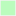

<!doctype html>
<html lang="en">
    <head>
        <meta charset="utf-8">
        <meta http-equiv="X-UA-Compatible" content="IE=edge">
        <meta name="viewport" content="initial-scale=1,user-scalable=no,maximum-scale=1,width=device-width">
        <meta name="mobile-web-app-capable" content="yes">
        <meta name="apple-mobile-web-app-capable" content="yes">
        <link rel="stylesheet" href="css/leaflet.css">
        <link rel="stylesheet" href="css/L.Control.Layers.Tree.css">
        <link rel="stylesheet" href="css/L.Control.Locate.min.css">
        <link rel="stylesheet" href="css/qgis2web.css">
        <link rel="stylesheet" href="css/fontawesome-all.min.css">
        <style>
        #map {
            width: 1082px;
            height: 541px;
        }
		.ol-popup {
    max-width: 200px !important;
    font-size: 12px;
}
        </style>
        <title>Fundo Altos de Rebeca</title>
    </head>
    <body>
        <div id="map">
        </div>
        <script src="js/qgis2web_expressions.js"></script>
        <script src="js/leaflet.js"></script>
        <script src="js/L.Control.Layers.Tree.min.js"></script>
        <script src="js/L.Control.Locate.min.js"></script>
        <script src="js/leaflet.rotatedMarker.js"></script>
        <script src="js/leaflet.pattern.js"></script>
        <script src="js/leaflet-hash.js"></script>
        <script src="js/Autolinker.min.js"></script>
        <script src="js/rbush.min.js"></script>
        <script src="js/labelgun.min.js"></script>
        <script src="js/labels.js"></script>
        <script src="data/Parcelas_2.js"></script>
        <script src="data/Fotos_georref_3.js"></script>
        <script src="data/Rutadeacceso_4.js"></script>
        <script>
        var map = L.map('map', {
            zoomControl:false, maxZoom:28, minZoom:1
        }).fitBounds([[-36.68464999566778,-72.04148522036091],[-36.67735571309166,-72.02686958922509]]);
        var hash = new L.Hash(map);
        map.attributionControl.setPrefix('<a href="https://github.com/tomchadwin/qgis2web" target="_blank">qgis2web</a> &middot; <a href="https://leafletjs.com" title="A JS library for interactive maps">Leaflet</a> &middot; <a href="https://qgis.org">QGIS</a>');
        var autolinker = new Autolinker({truncate: {length: 30, location: 'smart'}});
        // remove popup's row if "visible-with-data"
        function removeEmptyRowsFromPopupContent(content, feature) {
         var tempDiv = document.createElement('div');
         tempDiv.innerHTML = content;
         var rows = tempDiv.querySelectorAll('tr');
         for (var i = 0; i < rows.length; i++) {
             var td = rows[i].querySelector('td.visible-with-data');
             var key = td ? td.id : '';
             if (td && td.classList.contains('visible-with-data') && feature.properties[key] == null) {
                 rows[i].parentNode.removeChild(rows[i]);
             }
         }
         return tempDiv.innerHTML;
        }
        // add class to format popup if it contains media
		function addClassToPopupIfMedia(content, popup) {
			var tempDiv = document.createElement('div');
			tempDiv.innerHTML = content;
			if (tempDiv.querySelector('td img')) {
				popup._contentNode.classList.add('media');
					// Delay to force the redraw
					setTimeout(function() {
						popup.update();
					}, 10);
			} else {
				popup._contentNode.classList.remove('media');
			}
		}
        var title = new L.Control({'position':'topleft'});
        title.onAdd = function (map) {
            this._div = L.DomUtil.create('div', 'info');
            this.update();
            return this._div;
        };
        title.update = function () {
            this._div.innerHTML = '<h2>Fundo Altos de Rebeca</h2>';
        };
        title.addTo(map);
        var zoomControl = L.control.zoom({
            position: 'topleft'
        }).addTo(map);
        L.control.locate({locateOptions: {maxZoom: 19}}).addTo(map);
        var bounds_group = new L.featureGroup([]);
        function setBounds() {
        }
        map.createPane('pane_OpenStreetMap_0');
        map.getPane('pane_OpenStreetMap_0').style.zIndex = 400;
        var layer_OpenStreetMap_0 = L.tileLayer('https://tile.openstreetmap.org/{z}/{x}/{y}.png', {
            pane: 'pane_OpenStreetMap_0',
            opacity: 1.0,
            attribution: '',
            minZoom: 1,
            maxZoom: 28,
            minNativeZoom: 0,
            maxNativeZoom: 19
        });
        layer_OpenStreetMap_0;
        map.addLayer(layer_OpenStreetMap_0);
        map.createPane('pane_Satelite_1');
        map.getPane('pane_Satelite_1').style.zIndex = 401;
        var layer_Satelite_1 = L.tileLayer('https://server.arcgisonline.com/ArcGIS/rest/services/World_Imagery/MapServer/tile/{z}/{y}/{x}', {
            pane: 'pane_Satelite_1',
            opacity: 0.767,
            attribution: '',
            minZoom: 1,
            maxZoom: 28,
            minNativeZoom: 0,
            maxNativeZoom: 18
        });
        layer_Satelite_1;
        map.addLayer(layer_Satelite_1);
        function pop_Parcelas_2(feature, layer) {
            var popupContent = '<table>\
                    <tr>\
                        <th scope="row">id</th>\
                        <td>' + (feature.properties['id'] !== null ? autolinker.link(feature.properties['id'].toLocaleString()) : '') + '</td>\
                    </tr>\
                    <tr>\
                        <th scope="row">Area M2</th>\
                        <td>' + (feature.properties['Area M2'] !== null ? autolinker.link(feature.properties['Area M2'].toLocaleString()) : '') + '</td>\
                    </tr>\
                    <tr>\
                        <th scope="row">Postacion</th>\
                        <td>' + (feature.properties['Postacion'] !== null ? autolinker.link(feature.properties['Postacion'].toLocaleString()) : '') + '</td>\
                    </tr>\
                    <tr>\
                        <th scope="row">Condicion</th>\
                        <td>' + (feature.properties['Condicion'] !== null ? autolinker.link(feature.properties['Condicion'].toLocaleString()) : '') + '</td>\
                    </tr>\
                    <tr>\
                        <th scope="row">Foto</th>\
                        <td>' + (feature.properties['Foto'] !== null ? '' : '') + '</td>\
                    </tr>\
                </table>';
            var content = removeEmptyRowsFromPopupContent(popupContent, feature);
			layer.on('popupopen', function(e) {
				addClassToPopupIfMedia(content, e.popup);
			});
			layer.bindPopup(content, { maxHeight: 400 });
        }

        function style_Parcelas_2_0(feature) {
            switch(String(feature.properties['Condicion'])) {
                case 'Disponible':
                    return {
                pane: 'pane_Parcelas_2',
                opacity: 1,
                color: 'rgba(242,242,242,0.25)',
                dashArray: '',
                lineCap: 'butt',
                lineJoin: 'miter',
                weight: 2.0, 
                fill: true,
                fillOpacity: 1,
                fillColor: 'rgba(25,249,31,0.07254901960784314)',
                interactive: true,
            }
                    break;
                case 'Reservada':
                    return {
                pane: 'pane_Parcelas_2',
                opacity: 1,
                color: 'rgba(242,242,242,0.25)',
                dashArray: '',
                lineCap: 'butt',
                lineJoin: 'miter',
                weight: 2.0, 
                fill: true,
                fillOpacity: 1,
                fillColor: 'rgba(247,189,5,0.24313725490196078)',
                interactive: true,
            }
                    break;
                case 'Vendida':
                    return {
                pane: 'pane_Parcelas_2',
                opacity: 1,
                color: 'rgba(242,242,242,0.25)',
                dashArray: '',
                lineCap: 'butt',
                lineJoin: 'miter',
                weight: 2.0, 
                fill: true,
                fillOpacity: 1,
                fillColor: 'rgba(200,38,9,0.25)',
                interactive: true,
            }
                    break;
            }
        }
        map.createPane('pane_Parcelas_2');
        map.getPane('pane_Parcelas_2').style.zIndex = 402;
        map.getPane('pane_Parcelas_2').style['mix-blend-mode'] = 'normal';
        var layer_Parcelas_2 = new L.geoJson(json_Parcelas_2, {
            attribution: '',
            interactive: true,
            dataVar: 'json_Parcelas_2',
            layerName: 'layer_Parcelas_2',
            pane: 'pane_Parcelas_2',
            onEachFeature: pop_Parcelas_2,
            style: style_Parcelas_2_0,
        });
        bounds_group.addLayer(layer_Parcelas_2);
        map.addLayer(layer_Parcelas_2);
        function pop_Fotos_georref_3(feature, layer) {
            var popupContent = '<table>\
                    <tr>\
                        <td colspan="2">' + (feature.properties['id'] !== null ? autolinker.link(feature.properties['id'].toLocaleString()) : '') + '</td>\
                    </tr>\
                    <tr>\
                        <th scope="row">Foto</th>\
                        <td>' + (feature.properties['Foto'] !== null ? '' : '') + '</td>\
                    </tr>\
                </table>';
            var content = removeEmptyRowsFromPopupContent(popupContent, feature);
			layer.on('popupopen', function(e) {
				addClassToPopupIfMedia(content, e.popup);
			});
			layer.bindPopup(content, { maxHeight: 400 });
        }

        function style_Fotos_georref_3_0() {
            return {
                pane: 'pane_Fotos_georref_3',
        rotationAngle: 0.0,
        rotationOrigin: 'center center',
        icon: L.icon({
            iconUrl: 'markers/Fotos_georref_3.svg',
            iconSize: [19.0, 19.0]
        }),
                interactive: true,
            }
        }
        map.createPane('pane_Fotos_georref_3');
        map.getPane('pane_Fotos_georref_3').style.zIndex = 403;
        map.getPane('pane_Fotos_georref_3').style['mix-blend-mode'] = 'normal';
        var layer_Fotos_georref_3 = new L.geoJson(json_Fotos_georref_3, {
            attribution: '',
            interactive: true,
            dataVar: 'json_Fotos_georref_3',
            layerName: 'layer_Fotos_georref_3',
            pane: 'pane_Fotos_georref_3',
            onEachFeature: pop_Fotos_georref_3,
            pointToLayer: function (feature, latlng) {
                var context = {
                    feature: feature,
                    variables: {}
                };
                return L.marker(latlng, style_Fotos_georref_3_0(feature));
            },
        });
        bounds_group.addLayer(layer_Fotos_georref_3);
        map.addLayer(layer_Fotos_georref_3);
        function pop_Rutadeacceso_4(feature, layer) {
            var popupContent = '<table>\
                    <tr>\
                        <th scope="row">Distancia</th>\
                        <td>' + (feature.properties['Distancia'] !== null ? autolinker.link(feature.properties['Distancia'].toLocaleString()) : '') + '</td>\
                    </tr>\
                </table>';
            var content = removeEmptyRowsFromPopupContent(popupContent, feature);
			layer.on('popupopen', function(e) {
				addClassToPopupIfMedia(content, e.popup);
			});
			layer.bindPopup(content, { maxHeight: 400 });
        }

        function style_Rutadeacceso_4_0() {
            return {
                pane: 'pane_Rutadeacceso_4',
                opacity: 1,
                color: 'rgba(227,26,28,1.0)',
                dashArray: '',
                lineCap: 'square',
                lineJoin: 'bevel',
                weight: 2.0,
                fillOpacity: 0,
                interactive: true,
            }
        }
        map.createPane('pane_Rutadeacceso_4');
        map.getPane('pane_Rutadeacceso_4').style.zIndex = 404;
        map.getPane('pane_Rutadeacceso_4').style['mix-blend-mode'] = 'normal';
        var layer_Rutadeacceso_4 = new L.geoJson(json_Rutadeacceso_4, {
            attribution: '',
            interactive: true,
            dataVar: 'json_Rutadeacceso_4',
            layerName: 'layer_Rutadeacceso_4',
            pane: 'pane_Rutadeacceso_4',
            onEachFeature: pop_Rutadeacceso_4,
            style: style_Rutadeacceso_4_0,
        });
        bounds_group.addLayer(layer_Rutadeacceso_4);
        map.addLayer(layer_Rutadeacceso_4);
        map.on("zoomend", function(e) {
            if (map.getZoom() <= 19 && map.getZoom() >= 16) {
                map.addLayer(layer_Fotos_georref_3);
            } else if (map.getZoom() > 19 || map.getZoom() < 16) {
                map.removeLayer(layer_Fotos_georref_3);
            }
        });
            if (map.getZoom() <= 19 && map.getZoom() >= 16) {
                map.addLayer(layer_Fotos_georref_3);
            } else if (map.getZoom() > 19 || map.getZoom() < 16) {
                map.removeLayer(layer_Fotos_georref_3);
            }
        var baseMaps = {};
        var overlaysTree = [
            {label: ' Ruta de acceso', layer: layer_Rutadeacceso_4},
            {label: ' Fotos_georref', layer: layer_Fotos_georref_3},
            {label: 'Parcelas<br /><table><tr><td style="text-align: center;"></td><td>Disponible</td></tr><tr><td style="text-align: center;"></td><td>Reservada</td></tr><tr><td style="text-align: center;"></td><td>Vendida</td></tr></table>', layer: layer_Parcelas_2},
            {label: "Satelite", layer: layer_Satelite_1},
            {label: "OpenStreetMap", layer: layer_OpenStreetMap_0},]
        var lay = L.control.layers.tree(null, overlaysTree,{
            //namedToggle: true,
            //selectorBack: false,
            //closedSymbol: '&#8862; &#x1f5c0;',
            //openedSymbol: '&#8863; &#x1f5c1;',
            //collapseAll: 'Collapse all',
            //expandAll: 'Expand all',
            collapsed: true,
        });
        lay.addTo(map);
        setBounds();
        var i = 0;
        layer_Parcelas_2.eachLayer(function(layer) {
            var context = {
                feature: layer.feature,
                variables: {}
            };
            layer.bindTooltip((layer.feature.properties['id'] !== null?String('<div style="color: #ffffff; font-size: 8pt; font-family: \'Arial\', sans-serif;">' + layer.feature.properties['id']) + '</div>':''), {permanent: true, offset: [-0, -16], className: 'css_Parcelas_2'});
            labels.push(layer);
            totalMarkers += 1;
              layer.added = true;
              addLabel(layer, i);
              i++;
        });
        resetLabels([layer_Parcelas_2]);
        map.on("zoomend", function(){
            resetLabels([layer_Parcelas_2]);
        });
        map.on("layeradd", function(){
            resetLabels([layer_Parcelas_2]);
        });
        map.on("layerremove", function(){
            resetLabels([layer_Parcelas_2]);
        });
        </script>
    </body>
</html>
